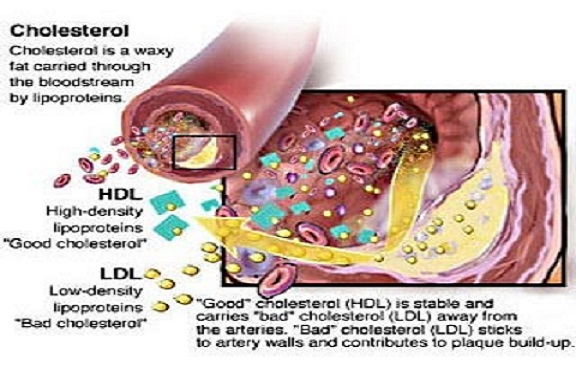

Two Benefits of Ketogenic Diets
Introduction
The Reason for this Webpage
Reading about, experimenting with, and trying many different diets has led me to try the ketogenic diet which I currently believe is the ‘healthiest’ diet for me. As I learned more about this diet I began to think that this is also the ‘healthiest’ diet for most people. Therefore, in this webpage I will outline and explain a couple of the benefits of this diet which will in turn show why I believe that this is the ‘healthiest’ diet for most people and I hope at the same time uncover at least how parts of this diet work,
The Primary Source of this Webpage
The technical nature of explaining these benefits of ketogenic diets has required me to rely heavily on sources of scientific information. The primary source used in the making of this webpage is The Art and Science of Low Carbohydrate Living: An Expert Guide to Making the Life-Saving Benefits of Carbohydrate Restriction Sustainable and Enjoyable. Doctors Volek and Phinney share over 50 years of clinical experience using low carbohydrate diets, and together they have published more than 200 research papers and chapters on the topic. Their book is well written, thorough, well-cited and has been invaluable in the construction of this webpage. I highly recommend it.
To keep the focus of this webpage on the content and not the source, not all the information presented has been cited. Where information has not been directly cited you can assume that it likely came from this book.
Macronutrients
Carbohydrates, protein, and fat are called macronutrients. Macronutrients are a class of chemical compounds that our bodies use largely for energy but also other things. Protein especially is used for other things, like rebuilding muscle tissue after strenuous exercise, but carbohydrates and fat are largely used by the body as an energy source.
All foods contain various amounts of these macronutrients in varying proportions. For example, a stick of butter mostly contains fat, a chicken breast mostly contains protein, a slice of bread contains mostly carbs, and an egg actually contains a fairly equal mix of protein and fat. The exact amounts that a particular food contains can be looked up with a nutrition label either online, in a book, or on the food’s packaging.
Above I mentioned that these macronutrients mainly provide the body with energy. Theoretically, the amount of energy that a food provides is measured by the amount of calories it contains. I say theoretically because the amount of calories that you eat is not proportional to the amount of energy that you will have.
Each gram of macronutrient that a food contains adds to the total number of calories that it contains. A gram of protein or carbohydrate adds 4 calories to that amount and a gram of fat adds 9. Therefore, a food that contains 10 grams of only protein or carbohydrates would contain 40 calories. Likewise, a food that contains only 10 grams of fat would contain 90 calories.
Macronutrients and Ketogenic Diets
In a typical ketogenic diet 70% of total calories eaten come from fat, 25% from protein, and 5% from carbohydrates. Here is a picture of the ‘Ketogenic’ Food Pyramid which also contains some more information about the macronutrients:

Source: http://www.myketokitchen.com/keto-resources/keto-food-pyramid-ketogenic-diets
A Day of Eating a Ketogenic Diet
A day of eating a ketogenic diet could look like this:

Source: http://www.ketogenic-diet-resource.com/ketogenic-diet-menu.html
What is Ketosis?
Ketogenic diets are named after the metabolic state which they produce called ketosis. Ketosis can be defined as the metabolic state where your body shifts from using glucose as its primary source of ‘fuel’. As a result most of your bodies energy needs will be met by fat, either directly by fatty acids, or indirectly by ketone bodies made from fat.
For most adults this begins after a few weeks of restricting total carbohydrates to less than 60 grams per day along with protein intake to about 0.7 – 0.9 grams per pound of bodyweight per day. After these few weeks’ primary serum (i.e. blood) ‘ketone’ (beta-hydroxybutyrate, or B-OHB), levels will rise above 0.5 millimolar (mM) (Volek & Phinney 4).
A range of serum ketones, from 0.5 to 5 mM, is your body’s normal physiological response to varying degrees of dietary carbohydrate and protein restriction. This response range is called nutritional ketosis, and is associated with metabolic adaptations that allow your body to maintain a stable state of inter-organ fuel homeostasis (Volek & Phinney 5). In other words, this level of serum ketones indicate that you and the organs in your body have enough fuel/energy.
Ketogenic Diet ‘Friendly’ Foods
As stated above ketosis does not happen unless the total number of carbohydrates eaten is kept below 60 grams (for most adults). Sometimes grams of carbohydrates are restricted to even lower amounts than that. Therefore, foods that are ketogenic diet ‘friendly’ are foods that are low in carbohydrates. Below is an infographic that presents some of the most ketogenic diet ‘friendly’ foods and the grams of carbohydrates per serving that they contain.

Source: https://www.dietdoctor.com/low-carb/keto#intro
Two Benefits of Ketogenic Diets
Now that you know what ketosis is, what a ketogenic diet looks like, and what a ketogenic diet is you are ready to read about a couple of its benefits. I chose to explain how ketogenic diets decrease insulin resistance and the risk of cardiovascular disease since the explanation of these two benefits reveal a lot about how ketogenic diets work. Many of the other benefits of ketogenic diets not explained in this webpage work similar ways. For example, a main reason that a ketogenic diet can treat metabolic syndrome is because it decreases insulin resistance (benefit 1).
Benefit 1: Decreased Insulin Resistance
The less resistant our body’s cells are to insulin the better. Ketogenic diets consistently decrease markers of insulin resistance. In the following section I will explain:
- What insulin is
- What insulin resistance is and why it is bad
- What inflammation is and how it increases insulin resistance and
- How ketogenic diets decrease insulin resistance
1 - Insulin and its Role in the Body
Insulin is a hormone that, primarily, decreases blood glucose levels by binding to receptors on the surface of a muscle cell’s which allows glucose to be transported across the cell membrane. It also simultaneously inhibits glucose production from the liver.

Source: http://www.news-medical.net/health/Insulins-role-in-the-human-body.aspx
The primary stimulator of insulin release (from the pancreas) is dietary carbohydrate (Volek & Phinney 78).
2 - Insulin Resistance
Insulin Resistance can be broadly defined insulin as having a diminished ability to exert its normal biologic effect on a cell (Phinney & Volek 76). In other words, insulin will be present in the blood stream and fail to cause cells use glucose. If glucose transporters are not turned on by insulin, glucose is stuck floating around in the fluid outside of our cells and causes high blood sugar (hyperglycemia). Chronic hyperglycemia is characteristic of diabetes mellitus and, if untreated, is associated with severe complications, such as damage to the nervous system, eyes, kidneys and extremities (Source: http://www.news-medical.net/health/Insulins-role-in-the-human-body.aspx).
Furthermore, insulin resistance does not develop overnight.
It is a slow and usually silent process [that occurs] over years or decades. As [it] develops, a number of physical and biochemical changes occur. The liver turns more blood sugar into fat, so serum triglycerides go up. Fat cells spend more time in storage mode, so weight gain occurs, particularly around the center of the body, including inside the abdomen. Blood pressure also tends to rise above normal, and good (HDL) cholesterol levels go down. This combination of signs has been labeled ‘metabolic syndrome’, and some doctors call it pre-diabetes because a high proportion of people with 3 or more of these signs eventually develop full-blown type-2 diabetes (Volek & Phinney 80-81).
We want our cells to be insulin sensitive since insulin resistance causes hyperglycemia and is associated with the development of metabolic syndrome. We also want to our cells to be insulin sensitive which leads to lower levels of insulin, since elevated levels of insulin are associated with higher levels of inflammation (Volek & Finney 81). I say that elevated levels of insulin are associated with higher levels of inflammation because a complete understanding of how insulin works is yet to be understood. Therefore, we only know that elevated levels of insulin are associated with higher levels of inflammation.
3 - Inflammation and How It Increases to Insulin Resistance
Inflammation is part of what we sometimes call ‘immunity’ or ‘host defense’. It is that complex mix of functions that our bodies use to defend against foreign substances and infections, and also how it stimulates the healing process after injury. We want inflammation levels to surge quickly when there is a threat, and retreat just as quickly when the threat is past” (Volek & Phinney 81).
Chronic high levels of inflammation are bad because they increase cellular free radical generation. Free radicals attack any convenient nearby target. Often ideal targets for free radicals are membrane polyunsaturated fats (HUFAs), which are important determinants of cellular function such as insulin sensitivity. In summary, more inflammation increases insulin resistance by creating free radicals that attack and damage the HUFAs in our cell’s membranes (Volek & Finney 82).
4 - How Ketogenic Diets Decrease Insulin Resistance
Ketogenic diets decrease the insulin resistance of our cells because they decrease the amount of dietary carbohydrates that a person consumes. This stops dietary carbohydrates from starting a vicious cycle which has in part already been described above, but can be more completely outlined.
The cycle is: (1) Dietary carbohydrate increase insulin levels. (2) Increased insulin levels are associated with higher levels inflammation. (3) Higher levels of inflammation create free radicals which damage the HUFAs in our cell’s membranes which decreases the insulin sensitivity of our cell’s. (4) The decreased insulin sensitivity of our cell membranes further increases insulin levels.
Benefit 2: Reduced Risk of Cardiovascular Disease (CVD)
Ketogenic diets reduce the risk of cardiovascular disease by (1) increasing the size of LDL-C, (2) raising HDL-C, and by (3) lowering plasma triglyceride levels. I will explain how ketogenic diets do this by explaining:
- The two kinds of cholesterol
- Why smaller LDL-C is a risk factor of CVD
- How carbohydrates decrease the size of LDL-C
- The importance of raising HDL-C
- How elevated levels of plasma triglycerides are a risk factor for CVD
- How carbohydrates elevate plasma triglyceride levels and
- How the Triglyceride/HDL ratio is associated with insulin resistance
1 - The Two Kinds of Cholesterol
The two kinds of cholesterol are LDL-C and HDL-C. Simply put, low-density lipoprotein (LDL-C) delivers cholesterol and other lipid substances from the liver to other organs throughout the body, whereas high-density lipoprotein (HDL-C) carries lipids in the opposite direction back to the liver for disposal. Too much cholesterol circulating as LDL-C may lead to accumulation of cholesterol in the arterial wall, plaque formation, and arterial disease (Volek & Phinney 90).
Source: http://homeremedieslog.com/wp-content/uploads/2014/10/cholesterol.jpg
{kind=link}
2 - The Size of LDL-C as a Risk Factor for CVD
However, more importantly compelling data now indicates that having more small LDL particles is associated with increased risk for heart disease. This is because small LDL particles reside in the circulation longer, have greater susceptibility to oxidative damage by free radicals, and more easily penetrate the arterial wall, which contributes to atherosclerosis (Volek & Phinney 94).
3 - Carbohydrate is the Major Driver of Small LDL Particle Size
LDL particle size decreases in individuals as the amounts of carbohydrates they eat increases, and LDL particle size increases as the amount of carbohydrates they eat decreases. Ketogenic diets consistently and significantly increase LDL particle size since they restrict carbohydrates which decreases the risk of heart disease (Volek & Phinney 92).
4 - The Importance of Raising HDL-C
Doctors Volek & Phinney describe the importance of raising HDL-C best.
HDL-C is one of the best biomarkers of long term cardiovascular health. Unfortunately for drug companies, however, it is a therapeutic target for which existing drugs have little efficacy. Low levels indicate significant cardiovascular risk independent of LDL-C. The importance of HDL-C derives from its well established role as a scavenger of excess un-esterified cholesterol from lipoproteins and tissues requiring transport back to the liver (i.e., reverse cholesterol transport). HDL-C also increases bioavailability of nitric oxide (important to the regulation of vascular function and blood pressure) and has antioxidant, anti-inflammatory, anti-thrombotic, and anti-apoptotic effects, all of which contribute to its anti-atherogenic properties. Almost as consistent as their triglyceride-lowering effects, low carbohydrate diets increase HDL-C” (Volek & Phinney 100-101).
5 - Elevated Triglycerides as a Risk Factor for CVD
Increased hepatic triglyceride production precipitates formation of highly atherogenic small LDL particles and a reduction in HDL cholesterol, all of which indicate a causal role for elevated triglycerides in the pathogenesis and progression of heart disease” (Volek & Phinney 97).
In other words, elevated triglyceride levels indicate that the liver is making more triglycerides which cause the formation of small artery clogging LDL particles and reduce ‘good’ cholesterol levels, which both promote heart disease.
6 - Carbohydrate is the Major Driver of Plasma Triglycerides
Carbohydrate is the major driver of plasma triglycerides levels. How carbohydrates increase triglyceride levels (as well as some other very interesting information) is described best by Doctors Volek and Phinney.
Most people have a total of about 20 grams (a little more than 1 tablespoon) of extra-cellular glucose – 10 grams circulating in their blood and another 10 grams diffused into extra-cellular fluid. A single meal from a ‘balanced diet’ can easily contain well over 100 grams carbohydrate, necessitating a mechanism to rapidly dispose of the incoming carbohydrate in order to maintain normal blood glucose. In the resting state much of this glucose should be converted to glycogen in skeletal muscle and liver. However, these organs have a maximum storage capacity of about 400 and 100 grams, respectively.
In addition to this limited capacity to store carbohydrate in the body, the metabolic conversion of glucose to glycogen (glycogen synthesis) is relatively slow, and in particular it is markedly impaired in individuals with insulin resistance. How then does a person with insulin resistance deal with a high carbohydrate meal? Whereas the conversion of glucose to glycogen is self-limiting, there is an almost infinite capacity to convert carbohydrate to fat (aka, de novo lipogenesis). The fatty acids derived from carbohydrate-induced hepatic de novo lipogenesis are made into triglycerides, packaged into large VLDL particles, which are then released into the circulation, contributing to elevated plasma triglycerides” (Volek & Finney 97 - 98).
For individuals on a ketogenic diet, dietary carbohydrates are converted into glycogen instead of fatty acids which does not raise plasma triglyceride levels. Since their plasma triglyceride levels are not raised, neither is their risk of heart disease.
7 - The Triglyceride/HDL Ratio as a Correlate to Insulin Resistance
Okay, so far you’ve seen that ketogenic diets (1) decrease triglyceride levels and (2) increase HDL levels. You’ve already seen how these markers increase the risk of cardiovascular disease. Not surprisingly, it turns out they also are highly associated with insulin resistance. In fact, “studies indicate the triglyceride/HDL-C ratio is highly associated with insulin resistance.
Simply put, the higher your triglycerides and/or the lower your HDL-C, the greater your degree of insulin resistance” (Volek & Phinney 101-102). If you increase carbohydrates, you increase this ratio, which is highly associated with insulin resistance. It is interesting that this ratio is highly associated with insulin resistance, because it supports the fact stated above: that increased levels of carbohydrates increase insulin resistance.
Conclusion
Hopefully you have learned a lot about ketogenic diets and some of its benefits from this webpage. There is a lot more to learn about them though and they have many more benefits! If reading this webpage has gotten you interested in ketogenic diets, or for more details about how ketogenic diets can treat or relate to seizures, as well as some other neurological disorders, metabolic syndrome, diabetes, and even cancer, I recommend the following resources.